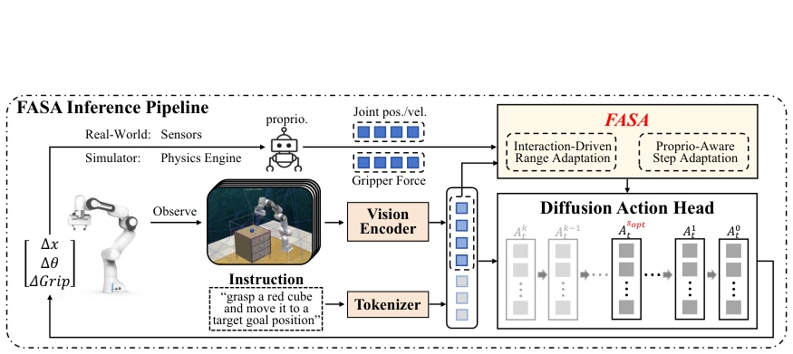
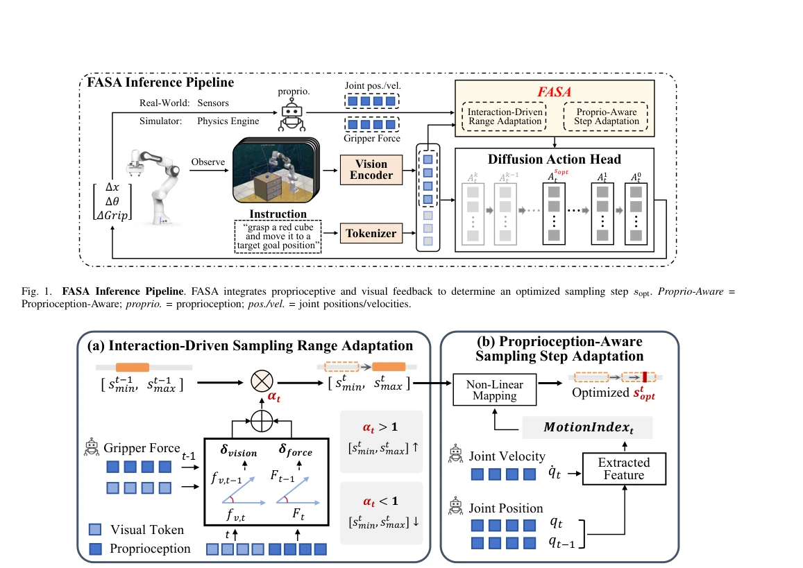
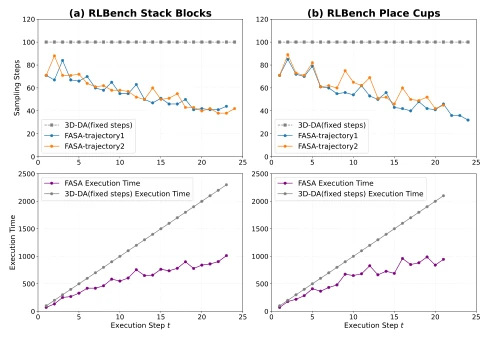

This paper performs a 'dynamic slimming' on diffusion-based VLA models, with a rather bold idea: Since robots have busy and idle periods when working, why run full sampling steps every time? FASA uses real-time feedback as a baton, calculating fewer steps during idle times and more during busy times, truly achieving 'save where appropriate, spend where appropriate'. Achieving 1.45x speedup on RLBench and ManiSkill3, while also slightly boosting success rate, this cost-effectiveness is quite high. However, this 'adapt to the specific case' adaptive strategy essentially changes the computational budget from 'rigid' to 'flexible', without solving the fundamental issue of slow inference in diffusion models themselves. If the robot is not equipped with force sensors (e.g., LIBERO experiments), the effect is discounted, indicating its reliance on multimodal feedback is still quite heavy. Additionally, whether this 'dynamic adjustment' leads to sampling collapse under extreme noise or sensor failure is not detailed in the paper. Overall, it is a very practical engineering optimization, but still falls short of 'universal acceleration', do not expect it to replace distillation or model compression.
Although diffusion-based VLA models have strong action generation capabilities, they rely on hundreds of iterations for denoising, resulting in high inference latency and large memory usage, severely hindering real-time deployment on edge devices. Existing acceleration schemes are mainly divided into two categories: one is training-based methods (e.g., consistency distillation [4]), which can reduce steps but require expensive retraining and have poor generalization; The other is training-free methods (e.g., static pruning [5], caching [6], or early exit [7]), which are usually based on fixed strategies or input statistical features and cannot perceive the current accuracy requirements of the task. This leads to failure due to premature stopping during fine manipulation stages (e.g., grasping), while wasting computational power during simple movement stages. More importantly, existing work ignores the real-time feedback streams unique to embodied intelligence (e.g., visual changes, force feedback), failing to utilize these signals to dynamically adjust the depth of the diffusion loop. FASA is designed to solve the mismatch problem between 'static budget' and 'dynamic task requirements', aiming to achieve training-free adaptive acceleration using real-time feedback.
FASA is a training-free, plug-and-play runtime framework, with the core idea of using environment feedback as control signals to dynamically schedule the sampling steps of diffusion denoising. The overall process is divided into two stages: first dynamically adjusting the global budget range of sampling steps through the Interaction-Driven Sampling Range Adaptation module, then precisely locating the optimal steps within the range through the Proprioception-Aware Sampling Step Adaptation module. Specifically, the Interaction-Driven Sampling Range Adaptation module calculates visual feature changes (based on cosine distance) and gripper force feedback changes in real-time, fusing them to generate a modulation factor αt. This factor dynamically scales the upper and lower bounds [s_min, s_max] of sampling steps: when the task is in a stable period (small changes), αt < 1 compresses the budget; when the task is in a dynamic interaction period (large changes), αt > 1 expands the budget. Subsequently, the Proprioception-Aware Sampling Step Adaptation module calculates the MotionIndex using joint positions and velocities, and precisely calculates the optimal sampling steps s_opt within the adapted range through a Sigmoid nonlinear gating mechanism. This two-layer design ensures both the elasticity of global computation and the accuracy of local action generation, requiring no modification of model weights, only achievable by intercepting the inference loop.

Fig. 1. FASA Inference Pipeline. FASA integrates proprioceptive and visual feedback to determine an optimized sampling step sopt. Proprio-Aware = Proprioception-Aware; proprio. = proprioception; pos./vel. = joint positions/velocities.

Fig. 2. FASA Framework. (a) Interaction-Driven Sampling Range Adaptation takes visual feature fv,t and gripper force Ft to compute a modulation factor αt that adjusts the range [st min, st max]. (b) Proprioception-Aware Sampling Step Adaptation extracts joint position qt and velocity ˙qt to form MotionIndext; both determine the optimized sampling step st opt.
The authors conducted extensive evaluations on three benchmarks: RLBench, ManiSkill3, and LIBERO, with baselines including 3D Diffuser Actor, Diffusion Policy, and RDT. On RLBench, FASA improved the average success rate from 75.96% to 77.48%, with inference speed increasing by 1.40x; On ManiSkill3, it achieved 1.45x speedup for Diffusion Policy (success rate 70.28%→76.39%), and 1.23x speedup for RDT. On the LIBERO dataset, even under the variant without force feedback, 1.23x speedup was achieved. Ablation studies show that using the range adaptation module alone brings 1.64x speedup but sacrifices accuracy, while using the step adaptation module alone only improves by 1.18x; combining both (FASA) achieves 1.42x speedup while maintaining the highest success rate, proving the necessity of dual-layer adaptation. Result visualization shows that sampling steps change dynamically with the task, decreasing when stable and increasing when interaction is intense, verifying the effectiveness of closed-loop regulation.

Fig. 3. Visualization of FASA’s Adaptive Sampling. Two successful RLBench cases (Stack Blocks and Place Cups), showing sampling steps and execution time.